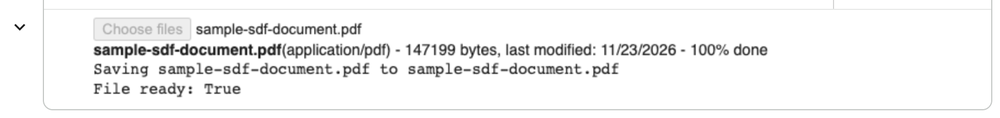
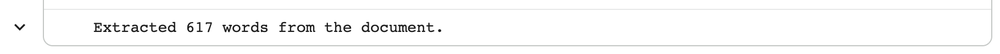
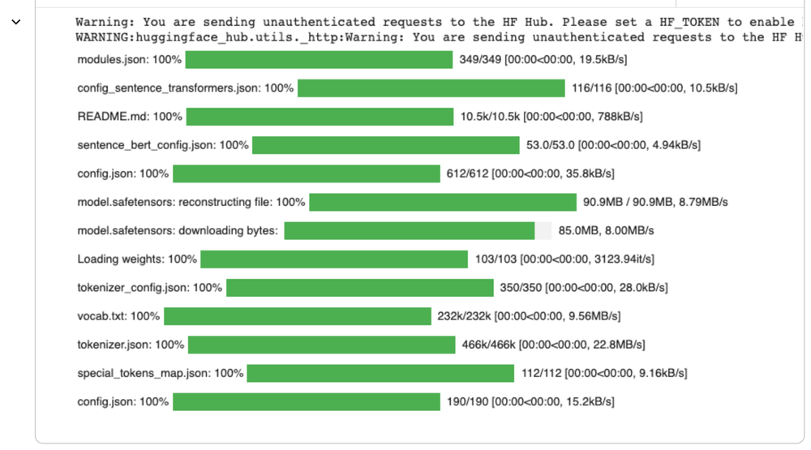
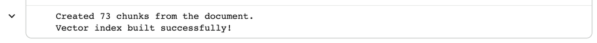
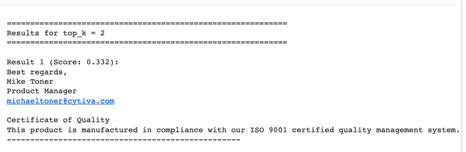
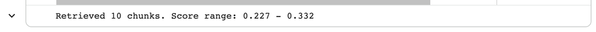
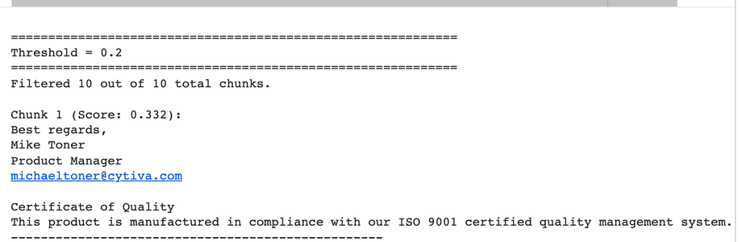
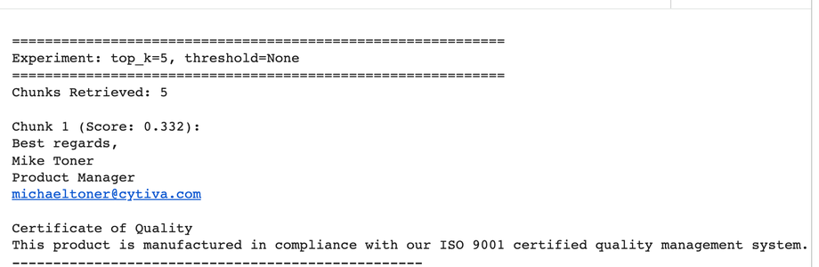

This notebook helps you experiment with Top-K retrieval and Similarity Thresholds using LlamaIndex and HuggingFace Embeddings.
You'll learn how to tune retrieval parameters to get better results from your RAG system.
# STEP 11. Each cell has a heading near its top, such as # STEP 1.This notebook doesn't use Gemini, so you don't need your API key. It only finds chunks; it never writes an answer.
Press Run on the cell with the heading # STEP 1:
# ============================================# STEP 1: Install Required Libraries# ============================================## WHAT WE'RE DOING:# Installing the Python packages needed for this notebook:# - llama-index: The RAG framework# - pymupdf: For reading PDF files# - llama-index-embeddings-huggingface: For using HuggingFace embedding models## WHY THIS MATTERS:# These libraries provide the building blocks for our RAG system.## WHAT YOU'LL SEE:# Installation progress messages (the -q flag keeps output minimal)# ============================================!pip install -q llama-index==0.14.25 pymupdf==2.1 llama-index-embeddings-huggingface==0.8.0What this code does:
!pip install, -q and exact versions such as ==0.14.25 from Project 5.What you'll see in Colab:
When the cell is done, a green tick appears next to it. The yellow WARNING line is safe to ignore: it names an extra part of a library this notebook doesn't use.
Seeing red "ERROR: pip's dependency resolver…" lines? You can ignore them too. Keep going. If a later cell fails with an ImportError, choose Runtime → Restart session, then run all cells again.
Press Run on the cell with the heading # STEP 2:
# ============================================# STEP 2: Import Libraries# ============================================## WHAT WE'RE DOING:# Loading the Python modules we'll use throughout this notebook.## WHY THIS MATTERS:# Each import provides specific functionality:# - VectorStoreIndex: Stores document chunks as vectors for similarity search# - Document: Wraps our text content# - HuggingFaceEmbedding: Converts text to numerical vectors# - SentenceSplitter: Breaks documents into smaller chunks# - pymupdf (PyMuPDF): Extracts text from PDF files## WHAT YOU'LL SEE:# No output if successful (imports happen silently)# ============================================from llama_index.core import VectorStoreIndex, Documentfrom llama_index.embeddings.huggingface import HuggingFaceEmbeddingfrom llama_index.core.node_parser import SentenceSplitterfrom llama_index.core.settings import Settingsimport pymupdf # PyMuPDFimport timeWhat this code does:
import pymupdf loads PyMuPDF, the PDF reader you used in Project 3. time can measure how long something takes.What you'll see in Colab:
No output, just a green tick: the imports worked.
Press Run on the cell with the heading # UPLOAD:
# ============================================# UPLOAD: Add the Supplier PDF to Colab# ============================================## WHAT WE'RE DOING:# Uploading the supplier PDF (sample-sdf-document.pdf) into this# Colab session, so the next cell can open it.## WHY THIS MATTERS:# Colab starts every session with an empty /content folder.# Without this upload, STEP 3 stops with a FileNotFoundError.## WHAT YOU'LL SEE:# A "Choose Files" button. Pick sample-sdf-document.pdf, then wait# for "Saving sample-sdf-document.pdf" and "File ready: True".# ============================================import osfrom google.colab import filesuploaded = files.upload()# If your browser renamed the file (for example "sample-sdf-document (1).pdf"),# save it under the name STEP 3 expectsfor file_name in uploaded: if file_name != "sample-sdf-document.pdf": os.replace(file_name, "sample-sdf-document.pdf")print("File ready:", os.path.exists("/content/sample-sdf-document.pdf"))What this code does:
files.upload() shows a Choose Files button. Pick the supplier file you downloaded on slide 1.What you'll see in Colab:

(opens the picture full size in a new tab)File ready: True means the file is in Colab, under the name the next cell opens.
If it says File ready: False, or you closed the file picker, run the UPLOAD cell again and pick the PDF.
Press Run on the cell with the heading # STEP 3:
# ============================================# STEP 3: Load the PDF Document# ============================================## WHAT WE'RE DOING:# Loading a pharmaceutical SDF (Specification Data File) document# and extracting all text from it.## WHY THIS MATTERS:# This is the document our RAG system will search through.# The SDF contains product specifications, test methods, and# quality control information - exactly what we want to query.## WHAT YOU'LL SEE:# The text variable will contain all text from the PDF.# ============================================# Load the pharmaceutical SDF document (upload your own or use the sample)pdf_path = "/content/sample-sdf-document.pdf"doc = pymupdf.open(pdf_path)text = "\n".join([page.get_text() for page in doc])print(f"Extracted {len(text.split())} words from the document.")What this code does:
pymupdf.open(pdf_path) opens the PDF, and page.get_text() reads each page's text. The pages are joined into one string, text.len(text.split()) counts the words.What you'll see in Colab:

(opens the picture full size in a new tab)The supplier file has 617 words. That's the whole text the next steps search.
text now holds: all 617 words of the supplier file.
Press Run on the cell with the heading # STEP 4:
# ============================================# STEP 4: Configure the Embedding Model# ============================================## WHAT WE'RE DOING:# Setting up the model that converts text into numerical vectors.# We're using MiniLM-L6-v2, a fast and efficient embedding model.## WHY THIS MATTERS:# Embeddings are the foundation of semantic search. They allow# us to find text chunks that are semantically similar to our# query, even if they don't share exact keywords.## WHAT YOU'LL SEE:# Model download progress on first run, then silence on success.# ============================================embed_model = HuggingFaceEmbedding(model_name="sentence-transformers/all-MiniLM-L6-v2")Settings.embed_model = embed_modelWhat this code does:
HuggingFaceEmbedding(...) loads MiniLM, the embedding model you met in the last reading. It turns text into a list of numbers.Settings.embed_model = embed_model tells LlamaIndex to use it for every chunk and question.What you'll see in Colab:

(opens the picture full size in a new tab)The first time, Colab downloads the model files, and the bars fill to 100%.
The HF_TOKEN warning is safe to ignore. A token only speeds up downloads from Hugging Face, the website that shares free AI models. The model downloads without one.
Settings.embed_model now holds: MiniLM, ready to embed chunks.
Press Run on the cell with the heading # STEP 5: Here is the top of it:
# ============================================# STEP 5: Split Document into Chunks and Build Index# ============================================## WHAT WE'RE DOING:# 1. Breaking the document into small, overlapping chunks# 2. Converting each chunk into a vector embedding# 3. Storing all vectors in a searchable index## WHY THIS MATTERS:# - Small chunks (50 tokens) allow precise retrieval# - Overlap (50 tokens) prevents information loss at boundaries# - The index enables fast similarity search## WHAT YOU'LL SEE:# Progress messages as chunks are processed and indexed.# ============================================# Define a sentence splitter (chunk_size and chunk_overlap in tokens)text_splitter = SentenceSplitter(chunk_size=50, chunk_overlap=50)What this code does:
SentenceSplitter(chunk_size=50, chunk_overlap=50) makes a splitter that cuts text into chunks of up to 50 tokens (a token is a word or part of a word).Here's the rest of the same cell:
# Turn raw text into a list of Document objectsdocuments = [Document(text=text)]# Convert into nodes (smaller chunks)nodes = text_splitter.get_nodes_from_documents(documents)print(f"Created {len(nodes)} chunks from the document.")# Build the vector index from these nodesindex = VectorStoreIndex(nodes)print("Vector index built successfully!")What this code does:
get_nodes_from_documents cuts the text into chunks. LlamaIndex calls them nodes.VectorStoreIndex(nodes) embeds every chunk with MiniLM and keeps the embeddings, so it can search them.What you'll see in Colab:

(opens the picture full size in a new tab)The 617-word file became 73 chunks. That's a lot of chunks for a short file, because the overlap is as long as the chunk, so neighbouring chunks share most of their words. Optional Reading explains it.
index now holds: the 73 chunks, ready to search.
Experiment 1: Top-K Retrieval. Top-K controls how many chunks are returned.
Try running the same query with a different top_k value: like 2, 5, and 10, and observe what changes. Press Run on the cell with the heading # STEP 6:
# ============================================# STEP 6: Define Query and Top-K Values to Test# ============================================## WHAT WE'RE DOING:# Setting up a pharmaceutical query and different top_k values# to see how many results affect retrieval quality.## WHY THIS MATTERS:# The right top_k value balances comprehensiveness vs. noise.# Too few results may miss important info; too many dilute relevance.## WHAT YOU'LL SEE:# We'll compare results for top_k = 2, 5, and 10.# ============================================query = "What test methods were used for quality control?"top_k_values = [2, 5, 10]What this code does:
query holds the question, and top_k_values the three values to try.What you'll see in Colab:
No output, just a green tick.
In your code, look for where you define the retriever: the line retriever = index.as_retriever(similarity_top_k=top_k). Press Run on the cell with the heading # STEP 7:
# ============================================# STEP 7: Run Top-K Experiment# ============================================## WHAT WE'RE DOING:# Retrieving chunks for each top_k value and displaying results.## WHY THIS MATTERS:# This shows you exactly how top_k affects what information# your RAG system will use to generate answers.## WHAT YOU'LL SEE:# For each top_k value, you'll see the retrieved chunks.# Notice how higher K values bring in more (but less relevant) results.# ============================================for top_k in top_k_values: print(f"\n{'='*60}") print(f"Results for top_k = {top_k}") print(f"{'='*60}") retriever = index.as_retriever(similarity_top_k=top_k) nodes = retriever.retrieve(query) for i, node in enumerate(nodes): print(f"\nResult {i+1} (Score: {node.score:.3f}):") print(node.get_text()) print("-" * 50)What this code does:
top_k: 2, 5 and 10.retriever.retrieve(query) finds the top_k chunks closest in meaning to the question, best match first.What you'll see in Colab:

(opens the picture full size in a new tab)Here is the whole top_k = 2 part of your output:
Results for top_k = 2
============================================================
Result 1 (Score: 0.332):
Best regards,
Mike Toner
Product Manager
michaeltoner@cytiva.com
Certificate of Quality
This product is manufactured in compliance with our ISO 9001 certified quality management system.
--------------------------------------------------
Result 2 (Score: 0.311):
5 bar, 5 min hold
Pass
Visual Inspection
No defects visible
Pass
Package Integrity
Sealed,
--------------------------------------------------
With top_k = 5, Results 1 and 2 are the same two chunks again. Here are the three new ones, as your output shows them:
Result 3 (Score: 0.260):
derived ingredients or in compliance with EMA/410/01.
Country of Origin: USA
Cytiva
cytiva.com
Certificate of Quality
This product is manufactured in compliance with our ISO 9001 certified quality management system.
--------------------------------------------------
Result 4 (Score: 0.259):
Conformance
Bio-safety
All polymeric materials in contact with the process fluid comply with United States Pharmacopeia (USP) <88> Biological
Reactivity Test Class VI and are free from animal derived ingredients or in compliance with
--------------------------------------------------
Result 5 (Score: 0.256):
Gradient C, Modified, ÄKTATM ready
Expiration Date: 20230126
Product Release Criteria
We hereby certify that the defined product has been manufactured to meet its specifications and have been verified to
meet predetermined Critical to Quality attributes
--------------------------------------------------
With top_k = 10, Results 1 to 5 are the same five chunks. Here are the next three:
Result 6 (Score: 0.248):
Regulatory Conformance
Bio-safety
All polymeric materials in contact with the process fluid comply with United States Pharmacopeia (USP) <88> Biological
Reactivity Test Class VI and are free from animal derived ingredients or in
--------------------------------------------------
Result 7 (Score: 0.230):
Date: 20230126
Product Release Criteria
We hereby certify that the defined product has been manufactured to meet its specifications and have been verified to
meet predetermined Critical to Quality attributes and the flow kit has been formally released for delivery.
--------------------------------------------------
Result 8 (Score: 0.228):
C, Modified, ÄKTATM ready
Expiration Date: 20230126
Product Release Criteria
We hereby certify that the defined product has been manufactured to meet its specifications and have been verified to
meet predetermined Critical to Quality attributes and
--------------------------------------------------And here are the last two, the end of your STEP 7 output:
Result 9 (Score: 0.227):
Flow Gradient C, Modified, ÄKTATM ready
Expiration Date: 20230126
Product Release Criteria
We hereby certify that the defined product has been manufactured to meet its specifications and have been verified to
meet predetermined Critical to Quality
--------------------------------------------------
Result 10 (Score: 0.227):
Issued by Cytiva Westborough Quality Assurance
This document has been electronically produced and is valid without a signature.
--------------------------------------------------What Should You Watch For?
top_k is low (like 2), does it miss useful info?Here's a quick comparison table you can use. Fill it in on paper or in a text cell in your notebook:
| Top-K | Relevance (1 to 5) | Repetition | Notes |
|---|---|---|---|
| 2 | |||
| 5 | |||
| 10 |
In our run, the first chunk, scored 0.332, is an email sign-off with a line about the supplier's quality system. It names no test method. With top_k = 10, the scores fall to 0.227, and several chunks repeat the same "Expiration Date" lines.
Experiment 2: Similarity Thresholds. Thresholds filter out low-quality matches.
Let's say you've already retrieved the top 10 chunks. Press Run on the cell with the heading # STEP 8:
# ============================================# STEP 8: Retrieve Chunks for Threshold Filtering# ============================================## WHAT WE'RE DOING:# Getting the top 10 chunks so we have a pool to filter from.## WHY THIS MATTERS:# We need to retrieve chunks first, then we can apply score# thresholds to filter out low-relevance results.## WHAT YOU'LL SEE:# 10 chunks retrieved, each with a similarity score.# ============================================retriever = index.as_retriever(similarity_top_k=10)retrieved_nodes = retriever.retrieve(query)print(f"Retrieved {len(retrieved_nodes)} chunks. Score range: {retrieved_nodes[-1].score:.3f} - {retrieved_nodes[0].score:.3f}")What this code does:
retrieved_nodes keeps the top 10 chunks, so the next cell can filter them.What you'll see in Colab:

(opens the picture full size in a new tab)Your scores run from 0.227 to 0.332. That's the range to pick a threshold from.
Your notebook's note says MiniLM scores typically range 0.1 to 0.4. On the supplier file, for this question, all 10 scores sit between 0.227 and 0.332, so a threshold of 0.20 or lower keeps every chunk. That's why your notebook tries 0.20, 0.25 and 0.30.
A threshold (or cut-off) is the lowest score a chunk needs to be kept.
This experiment shows you how to manually apply a similarity threshold to filter out weak matches.
Now, add a manual filtering step to remove chunks with a score lower than a threshold. Your notebook tries three: 0.20, 0.25 and 0.30. Press Run on the cell with the heading # STEP 9: Here is the top of it:
# ============================================# STEP 9: Apply Different Similarity Thresholds# ============================================## WHAT WE'RE DOING:# Filtering chunks based on their similarity scores.# We test thresholds of 0.20, 0.25, and 0.30.## WHY THIS MATTERS:# Thresholds help you control quality vs. quantity tradeoff.# - 0.20: Permissive - includes marginally relevant chunks# - 0.25: Moderate - good balance for most use cases# - 0.30: Strict - only highly relevant chunks pass## WHAT YOU'LL SEE:# Different numbers of chunks passing each threshold.# Higher thresholds = fewer but more relevant results.# ============================================What this code does:
Here's the rest of the same cell:
for threshold in [0.20, 0.25, 0.30]: filtered_nodes = [node for node in retrieved_nodes if node.score and node.score > threshold] print(f"\n{'='*60}") print(f"Threshold = {threshold}") print(f"{'='*60}") print(f"Filtered {len(filtered_nodes)} out of {len(retrieved_nodes)} total chunks.") for i, node in enumerate(filtered_nodes): print(f"\nChunk {i+1} (Score: {node.score:.3f}):") print(node.get_text()) print("-" * 50)What this code does:
[node for node in retrieved_nodes if ...] keeps only the chunks whose score is above the threshold.What you'll see in Colab:

(opens the picture full size in a new tab)Your output has three parts, one for each threshold. Each part starts with how many chunks passed:
| Threshold | Chunks kept | Scores of the chunks kept |
|---|---|---|
| 0.2 | 10 of 10 | 0.332, 0.311, 0.260, 0.259, 0.256, 0.248, 0.230, 0.228, 0.227, 0.227 |
| 0.25 | 5 of 10 | 0.332, 0.311, 0.260, 0.259, 0.256 |
| 0.3 | 2 of 10 | 0.332, 0.311 |
Here is the whole threshold = 0.3 part of your output, the end of your STEP 9 output:
Threshold = 0.3
============================================================
Filtered 2 out of 10 total chunks.
Chunk 1 (Score: 0.332):
Best regards,
Mike Toner
Product Manager
michaeltoner@cytiva.com
Certificate of Quality
This product is manufactured in compliance with our ISO 9001 certified quality management system.
--------------------------------------------------
Chunk 2 (Score: 0.311):
5 bar, 5 min hold
Pass
Visual Inspection
No defects visible
Pass
Package Integrity
Sealed,
--------------------------------------------------What Should You Watch For?
Try adjusting the threshold. Fill in this table on paper or in a text cell in your notebook:
| Threshold | Chunks Kept | Chunk Quality (1 to 5) | Notes |
|---|---|---|---|
| 0.20 | |||
| 0.25 | |||
| 0.30 |
Experiment 3: Combined Configurations. Now let's try different combinations of top_k AND threshold to find the optimal retrieval configuration. Press Run on the cell with the heading # STEP 10:
# ============================================# STEP 10: Define Experiment Configurations# ============================================## WHAT WE'RE DOING:# Setting up three different retrieval configurations to compare.## WHY THIS MATTERS:# Real-world RAG systems need tuned parameters. These experiments# help you understand the tradeoffs.## Configurations:# 1. top_k=5, no threshold - Get 5 best chunks regardless of score# 2. top_k=8, threshold=0.25 - Get up to 8, but filter weak matches# 3. top_k=5, threshold=0.30 - Conservative: few chunks, high quality# ============================================experiments = [ {"top_k": 5, "threshold": None}, {"top_k": 8, "threshold": 0.25}, {"top_k": 5, "threshold": 0.30},]What this code does:
experiments is a list of three settings. Each one has a top_k and a threshold; None means no threshold.What you'll see in Colab:
No output, just a green tick.
Press Run on the cell with the heading # STEP 11: Here is the top of it:
# ============================================# STEP 11: Run Combined Experiments# ============================================## WHAT WE'RE DOING:# Running each configuration and comparing the results.## WHY THIS MATTERS:# This is how you would tune a production RAG system -# testing different configurations to find what works best# for your specific documents and query types.## WHAT YOU'LL SEE:# Results for each configuration showing chunks retrieved# and their similarity scores.# ============================================What this code does:
Here's the rest of the same cell:
for exp in experiments: print(f"\n{'='*60}") print(f"Experiment: top_k={exp['top_k']}, threshold={exp['threshold']}") print(f"{'='*60}") retriever = index.as_retriever(similarity_top_k=exp["top_k"]) nodes = retriever.retrieve(query) if exp["threshold"]: nodes = [node for node in nodes if node.score and node.score > exp["threshold"]] print(f"Chunks Retrieved: {len(nodes)}") for i, node in enumerate(nodes): print(f"\nChunk {i+1} (Score: {node.score:.3f}):") print(node.get_text()) print("-" * 50)What this code does:
top_k chunks, then, if there is a threshold, keeps only the chunks scoring above it.What you'll see in Colab:

(opens the picture full size in a new tab)Your output has three parts, one for each combination. Each part starts with how many chunks were kept:
| Combination | Chunks Retrieved | Scores |
|---|---|---|
| top_k=5, threshold=None | 5 | 0.332, 0.311, 0.260, 0.259, 0.256 |
| top_k=8, threshold=0.25 | 5 | 0.332, 0.311, 0.260, 0.259, 0.256 |
| top_k=5, threshold=0.3 | 2 | 0.332, 0.311 |
Here's the start of the second combination's part of your output:
Experiment: top_k=8, threshold=0.25
============================================================
Chunks Retrieved: 5
Chunk 1 (Score: 0.332):
Best regards,
Mike Toner
Product Manager
michaeltoner@cytiva.com
Certificate of Quality
This product is manufactured in compliance with our ISO 9001 certified quality management system.
--------------------------------------------------It asked for 8 chunks, and the threshold kept 5.
You're done with the practice, so you can stop after STEP 11. The NEXT STEPS cell below it is for the Challenge, under these slides.